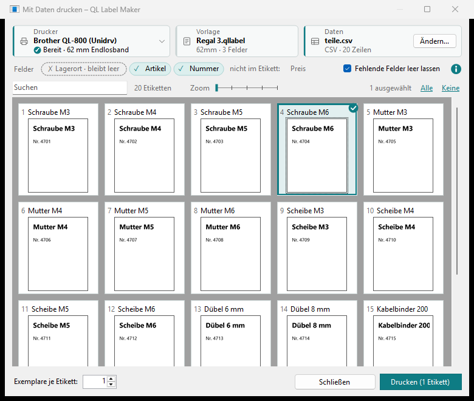
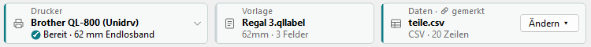

Mit Daten drucken
Ein Etikett, viele Varianten: Felder im Etikett werden aus einer Datendatei (CSV oder JSON) gefüllt, eine Zeile je Etikett. Sie wählen aus, welche gedruckt werden, und sehen jedes vorher so, wie es gedruckt wird.
-
Felder im Etikett
Ein Feld ist ein Name in geschweiften Klammern, z. B.
{Artikel}, in einem Text, im Inhalt eines Barcodes oder in einem Feld eines QR-Codes. Beim Drucken steht dort der Wert aus der Spalte gleichen Namens; Groß- und Kleinschreibung zählen nicht.{Artikel}- der Wert aus der Spalte „Artikel“
{Lagerort|Halle 1}- mit Standardwert nach dem senkrechten Strich: gilt, wenn die Spalte fehlt oder die Zelle leer ist
{Zusatz|}- nichts nach dem Strich: Ohne Wert bleibt die Stelle leer
{date}und{time}bleiben Datum und Uhrzeit (Datum und Uhrzeit). Ein Wert aus den Daten wird gedruckt, wie er ist, auch wenn er Klammern enthält.Feld einfügen ▾ > Eigenes Feld… fragt nach dem Feldnamen und danach, was ohne Wert gelten soll: Beim Drucken melden, Leer lassen oder ein Standardwert. Es fügt das Feld richtig geschrieben ein; danach lässt es sich wie jeder Text bearbeiten.
-
Die Datendatei
Die erste Zeile nennt die Spalten, jede weitere Zeile ist ein Etikett. Excel speichert so etwas mit Speichern unter > CSV (Trennzeichen-getrennt).
Artikel;Nummer;Lagerort Schraube M4 × 20;4711;Regal 3 Mutter M4;4712;Regal 3
Trennzeichen Semikolon, Komma oder Tabulator; als Zeichensatz UTF-8, UTF-16 oder Windows-1252 (so speichert Excel ohne UTF-8). Spalten, die das Etikett nicht braucht, stören nicht. Eine Spalte
copieslegt die Anzahl je Zeile fest; 0 lässt die Zeile aus.Eine Spalte
labelnamegibt jedem Etikett einen Namen, z. B. einen Kurznamen wieA1234: Er steht in der Vorschau neben der Nummer, die Suche findet ihn, und Meldungen nennen ihn. Ist die Zelle leer, steht dort nur die Nummer; ohne die Spalte der erste Wert der Zeile. Das Etikett kann ihn auch als Feld{labelname}drucken.Statt einer CSV-Datei funktioniert auch eine JSON-Datei: eine Liste von Objekten, jeder Wert ein Text, eine Zahl,
true/falseodernull(leer), ohne verschachtelte Objekte oder Listen. Jeder Name ist eine Spalte; fehlt er in einem Objekt, ist die Zelle leer.[ { "labelname": "A1234", "Artikel": "Schraube M4 × 20", "Nummer": 4711, "copies": 2 }, { "labelname": "A1235", "Artikel": "Mutter M4", "Nummer": 4712 } ] -
Daten wählen
Datei > Mit Daten drucken… (oder Drucken ▾, Strg+Umschalt+P) nimmt das geöffnete Etikett als Vorlage. Oben stehen drei Kacheln: Drucker mit seinem Zustand und der eingelegten Rolle (ein Klick öffnet die Liste; wählen Sie dort einen anderen Drucker, wechselt QL Label Maker mit), Vorlage und Daten. Ein farbiger Rand links zeigt, ob alles passt; gelb ist, was Sie ansehen sollten, zum Beispiel eine falsche Rolle. Wählen Sie mit + Datendatei wählen… die Daten, eine andere später mit Ändern…. Die Zeile Felder zeigt, was zusammenpasst: ✗ fehlende Felder zuerst, dann ✓ die gefundenen, danach die Spalten, die das Etikett nicht nutzt. Was nicht in die Zeile passt, zeigt +N weitere.

Ein fehlendes Feld ohne Standardwert verhindert das Drucken: Ergänzen Sie die Spalte, oder schalten Sie Fehlende Felder leer lassen ein. Ein Standardwert gilt auch dann.
Das Etikett merkt sich die gewählte Datendatei: Ein gespeichertes Etikett behält sie sofort, die Kachel zeigt Daten · 🔗 gemerkt. Hat das Etikett andere ungespeicherte Änderungen (oder wurde es nie gespeichert), zeigt sie Daten · 🔗 beim Speichern, bis Sie das Etikett speichern. Beim nächsten Mal lädt Mit Daten drucken… sie sofort. Sie wird auch gefunden, wenn Sie Etikett und Daten zusammen verschieben. Ist sie nicht da (verschoben, oder der Netzwerkordner ist offline), wird die Kachel gelb und sagt es; wählen Sie sie unter Ändern ▾ neu, oder Noch einmal, wenn der Ordner wieder da ist. Datei nicht mehr merken nimmt sie aus dem Etikett. Im Explorer öffnet Rechtsklick auf ein Etikett > Mit Daten drucken… (Windows 11: unter Weitere Optionen anzeigen) es direkt in diesem Fenster.

-
Etiketten auswählen
Jedes Etikett erscheint als kleine Vorschau mit seiner Zeilennummer und seinem
labelname(oder dem ersten Wert der Zeile). Am Anfang sind alle ausgewählt; ein Klick auf eines wählt nur dieses; Alle und Keine oben rechts wählen alle sichtbaren oder keines. Suchen blendet die Etiketten aus, die den Text nicht enthalten, z. B. für die eine Variante von zwanzig; das ✕ am Ende leert die Suche. Zoom macht die Vorschauen größer oder kleiner, auch mit dem Mausrad über dem Regler.Ein Doppelklick zeigt ein Etikett groß, schraffiert, wo der Drucker nicht drucken kann. Dort druckt Drucken nur dieses Etikett, so oft wie Kopien sagt.
Drucken (N Etiketten) druckt die ausgewählten, sichtbaren Etiketten, jedes so oft wie Exemplare je Etikett sagt, als ein Druckauftrag. Der Dialog bleibt danach offen, damit Sie weitere oder dieselben Etiketten noch einmal drucken können; Schließen beendet ihn.
-
Vor dem Drucken
Wie beim normalen Drucken wird zuerst der Drucker gefragt, ob er bereit ist und die passende Rolle eingelegt ist (Drucken). Etiketten mit einem Barcode, der sich vielleicht nicht lesen lässt, oder mit Text, der am Rahmen abgeschnitten wird, werden vorher aufgelistet; Sie entscheiden, ob sie trotzdem gedruckt werden.
-
Ohne Fenster: QlLabelPrint.exe
Dasselbe funktioniert aus Skripten mit
QlLabelPrint.exeinC:\Program Files\QLUnidrv. Es druckt eine.qllabel-Datei mit einer CSV- oder JSON-Datei und fragt nichts, sondern meldet Probleme mit einem Rückgabewert. Ohne--datanimmt es die Datendatei, die sich das Etikett gemerkt hat (siehe oben), zuerst neben dem Etikett. Mit--name A1234druckt es nur das Etikett mit diesemlabelname.QlLabelPrint.exe --helpzeigt alle Optionen."C:\Program Files\QLUnidrv\QlLabelPrint.exe" --print Regal.qllabel --data teile.csv --dry-run